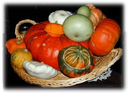
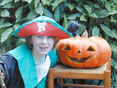
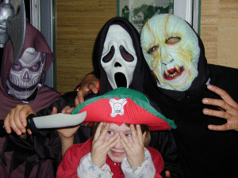
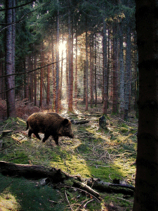

Photos de saison : l'automne

Halloween, la saison des cucurbitacées ... et des déguisements.
Pour en voir plus cliquez sur l'image.

Lolotte en Capitaine Crochet, après Hook ...à la TV !

Des masques qui font peur ! Provision de bonbons assurée !

La "grosse bête noire" en forêt d'Ayguebonne
vers saison hiver